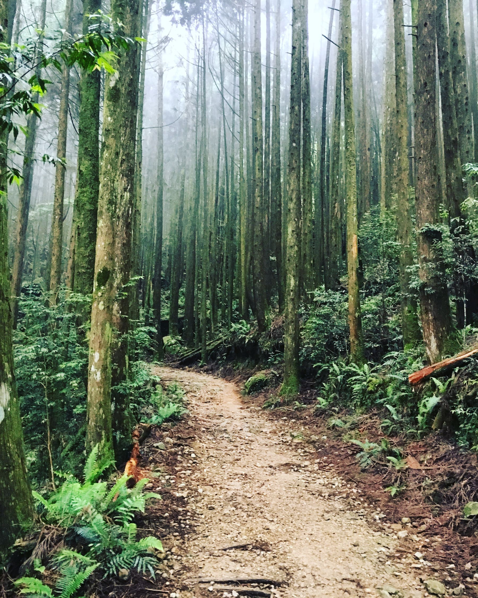

I can’t run a mile.
July 2016 - Fitness
Well, I couldn’t until yesterday.
It took me 27 years to realize I’ve been running too fast.
Even with a BMI of 20, exercising 8-10 hours a week, I’ve never been able to run more than a third of a mile without stopping for breath. It’s kind of pitiful! I could hike 15 miles every day, but I couldn’t jog just one. Side cramps and a feeling of suffocating, it all kept me from ever believing I was built to do it.
And for the first time in my life, I jogged a whole mile.
It wasn’t pretty. At some point, I was jogging so slowly that I might’ve gone a faster pace by just walking fast. But the key was not to just give up and walk. It was to train my body to keep going. To breathe enough to sustain my continuous movement. And then over time, to be able to improve upon that pace.
But giving up? Catching my breath and resting? I felt like there was no other option. I told people how I’d tried cardio in the past and how awful I was at it. That I attempted all sorts of breathing methods to keep my pace, and somehow the side stitches never went away. And it was true, sort of. Except I was running way too fast and I had no clue because “slow enough” was so slow that I felt kind of silly.
Somehow seeing people who were in significantly worse physical shape than me run several miles in one go, it only gave me more proof that I had some sort of excuse. That maybe my lungs had an unusually small capacity or my heart couldn’t pump blood fast enough.
And I know there’s got to be some people out there who thought the same as me. We just “can’t do cardio”, and it’s unexplainable. I wanted to be capable of it though--having great cardiovascular health is incredibly important for longevity. But maybe it was the distance traveled that made me so discouraged about continuing. When I’m finally jogging slow enough that walking is faster and more energy efficient, is there even a point to it?
I had never improved my cardiovascular health. Not ever. And I reached a previously unattainable milestone on day two of giving jogging an honest shot.
Now realizing that I’m just at level 1 and need to work my way up? I’m kind of excited. Like, maybe I could learn to like… or even love jogging. To have my first gorgeous morning run through a park, or have a zen moment where my mind is clear and I’m treading down a path effortlessly. I want to experience this at least once.
If you’re like me, I hope you will too.
I’m gonna keep pushing myself this week. We’ll see what happens.
I don't have comments set up yet, but I'd love to hear from you! My social media contacts are below.